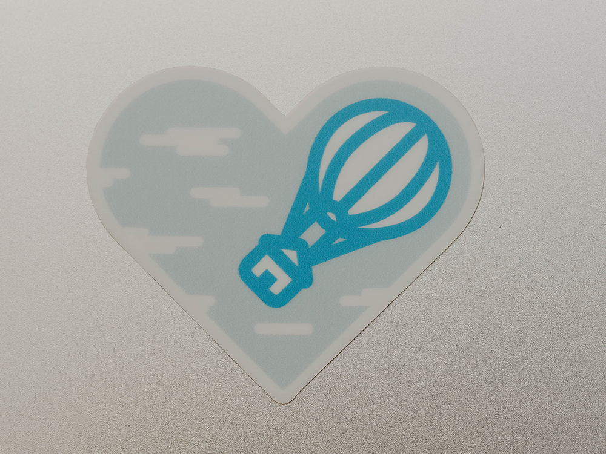
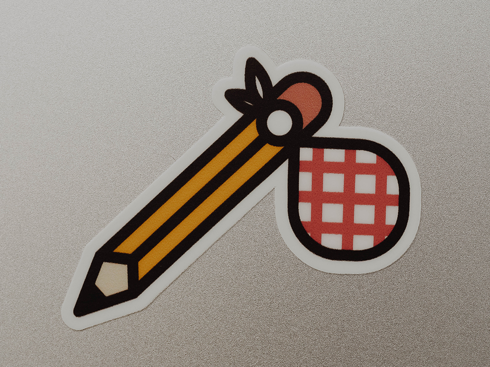

Derek Mark Torsani


Who doesn't love stickers? Especially little cute ones.
Being a digital nomad is something close to my heart. When I lost my first job out of college due to budget cuts, I thought that was it, I'm doomed. But what that experience did was force me into freelancing full-time.
This taught me many time-management, self-starting and -motivating skills. I learned to be intentional with remote communication, otherwise details between myself and my clients would be lost and projects would falal apart.
4 years later I decided to make a few stickers paying homage to that time in my life.
Home Is Where The Heart Is

Paper Airplane
Creative Bindle
derektorsani (at) gmail (dot) com
@dmtors